1. Introduction
The Java EE 7 platform continues the ease of development push that characterized prior releases by bringing further simplification to enterprise development. It adds new and important APIs such as the REST client API in JAX-RS 2.0 and the long awaited Batch Processing API. Java Message Service 2.0 has undergone an extreme makeover to align with the improvements in the Java language. There are plenty of improvements to several other components. Newer web standards like HTML 5, WebSocket, and JSON processing are embraced to build modern web applications.
This hands-on lab will build a typical 3-tier end-to-end application using the following Java EE 7 technologies:
-
Java API for WebSocket 1.0 (JSR 356)
-
Batch Applications for the Java Platform 1.0 (JSR 352)
-
Java API for JSON Processing 1.0 (JSR 353)
-
Java API for RESTful Web Services 2.0 (JSR 339)
-
Java Message Service 2.0 (JSR 343)
-
Java Persistence API 2.1 (JSR 338)
-
JavaServer Faces 2.2 (JSR 344)
-
Contexts and Dependency Injection 1.1 (JSR 346)
-
Bean Validation 1.1 (JSR 349)
-
Java Transaction API 1.2 (JSR 907)
Together these APIs will allow you to be more productive by simplifying enterprise development.
The latest version of this document can be downloaded from javaee7-hol.html. Please file issues or send pull requests for any updates.
1.1. Software Requirement
The following software needs to be downloaded and installed:
-
JDK 7 from http://www.oracle.com/technetwork/java/javase/downloads/index.html.
-
Application Server: This lab can use WildFly 8 or GlassFish 4 as the application server. This document provides instructions for WildFly 8.
-
IDE: NetBeans 7.4+, JBoss Developer Studio (Eclipse-based), or IntelliJ IDEA 13 can be used. This document provides instructions for NetBeans 8.
Download “All” or “Java EE” version from http://netbeans.org/downloads/. A snapshot of the downloads page is shown and highlights the exact ‘Download’ button to be clicked.
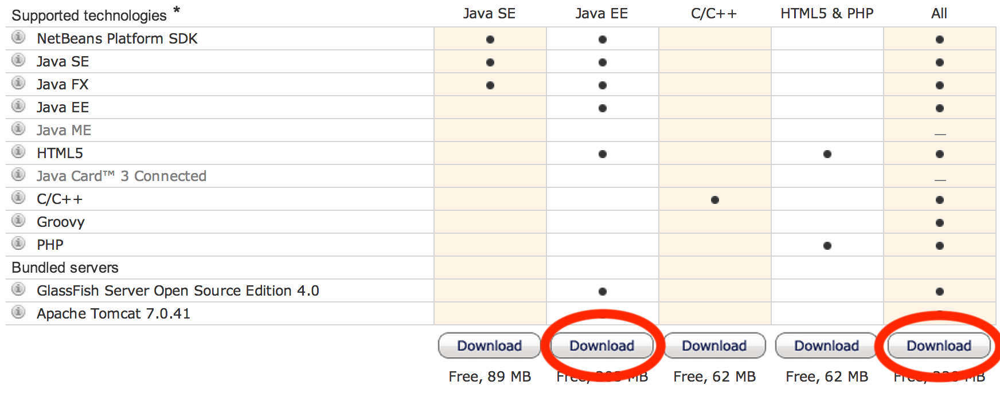Figure 1. NetBeans downloadWildFly 8 needs to be downloaded from wildfly.org and configured in NetBeans IDE following the instructions in Configure WildFly 8 in NetBeans.
TipPrepare IntelliJ IDEA for working with WildFly 8 explains how to configure WildFly in IntelliJ IDEA.
2. Problem Statement
This hands-on lab builds a typical 3-tier Java EE 7 Web application that allows customers to view the show timings for a movie in a 7-theater Cineplex and make reservations. Users can add new movies and delete existing movies. Customers can discuss the movie in a chat room. Total sales from each showing are calculated at the end of the day. Customers also accrue points for watching movies.

This figure shows the key components of the application. The User Interface initiates all the flows in the application. Show Booking, Add/Delete Movie and Ticket Sales interact with the database; Movie Points may interact with the database, however, this is out of scope for this application; and Chat Room does not interact with the database.
The different functions of the application, as detailed above, utilize various Java technologies and web standards in their implementation. The following figure shows how Java EE technologies are used in different flows.

The table below details the components and the selected technology used in its’ implementation.
| Flow | Description |
|---|---|
User Interface |
Written entirely in JavaServer Faces (JSF) |
Chat Room |
Utilizes client-side JavaScript and JSON to communicate with a WebSocket endpoint |
Ticket Sales |
Uses Batch Applications for the Java Platform to calculate the total sales and persist to the database. |
Add/Delete Movie |
Implemented using RESTful Web Services. JSON is used as on-the-wire data format |
Movie Points |
Uses Java Message Service (JMS) to update and obtain loyalty reward points; an optional implementation using database technology may be performed |
Show Booking |
Uses lightweight Enterprise JavaBeans to communicate with the database using Java Persistence API |
This document is not a comprehensive tutorial of Java EE. The attendees are expected to know the basic Java EE concepts such as EJB, JPA, JAX-RS, and CDI. The Java EE 7 Tutorial is a good place to learn all these concepts. However enough explanation is provided in this guide to get you started with the application.
|
Warning
|
This is a sample application and the code may not be following the best practices to prevent SQL injection, cross-side scripting attacks, escaping parameters, and other similar features expected of a robust enterprise application. This is intentional such as to stay focused on explaining the technology. It is highly recommended to make sure that the code copied from this sample application is updated to meet those requirements. |
2.1. Lab Flow
The attendees will start with an existing maven application and by following the instructions and guidance provided by this lab they will:
-
Read existing source code to gain an understanding of the structure of the application and use of the selected platform technologies.
-
Add new and update existing code with provided fragments in order to demonstrate usage of different technology stacks in the Java EE 7 platform.
While you are copy/pasting the code from this document into NetBeans, here are couple of tips that will be really useful and make your experience enjoyable!
- Source Code Formatting
-
NetBeans provides capability to neatly format the source code following conventions. This can be done for any type of source code, whether its XML or Java or something else. It is highly recommended to use this functionality after the code is copy/pasted from this document to the editor. This keeps the code legible.
This functionality can be accessed by right-clicking in the editor pane and selecting “Format” as shown.
 Figure 4. Format code in NetBeans
Figure 4. Format code in NetBeansThis functionality is also accessible using the following keyboard shortcuts:
Shortcut Operating System Ctrl+Shift+F
OSX
Alt+Shift+F
Windows
Alt+Shift+F
Linux
- Automatic Imports
-
Copy/pasting the Java code from this document in NetBeans editor does not auto-import the classes. This is required to be done manually in order for the classes to compile. This can be fixed for each missing import statement by clicking on the yellow bulb shown in the side bar.
 Figure 5. ServerEndpoint import
Figure 5. ServerEndpoint importAlternatively all the imports can be resolved by right-clicking on the editor pane and selecting “Fix Imports” as shown.
 Figure 6. Fix Imports in NetBeans
Figure 6. Fix Imports in NetBeansThis functionality is also accessible using the following keyboard shortcuts:
Shortcut Operating System Command+Shift+I
OSX
Ctrl+Shift+I
Windows
Ctrl+Shift+I
Linux
The defaults may work in most of the cases. Choices are shown in case a class is available to import from multiple packages. If multiple packages are available then specific packages to import from are clearly marked in the document.
2.2. Estimated Time
Following the complete instructions in this document can take any where from two to four hours. The wide time range accommodates for learning the new technologies, finding your way in NetBeans, copy/pasting the code, and debugging the errors.
The recommended flow is where you follow through the instructions in all sections in the listed sequence. Alternatively, you may like to cover section Walk-through of Sample Application through Show Booking (JavaServer Faces) in an order of your choice, based upon your interest and preference of the technology. However section View and Delete Movie (Java API for RESTful Web Services) is a pre-requisite for Add Movie (Java API for JSON Processing).
Here is an approximate time estimate for each section:
| Section Title | Estimated Time |
|---|---|
15 - 30 mins |
|
30 - 45 mins |
|
30 - 45 mins |
|
30 - 45 mins |
|
30 - 45 mins |
|
30 - 45 mins |
|
30 - 45 mins |
The listed time for each section is only an estimate and by no means restrict you within that. These sections have been completed in much shorter time, and you can do it too!
|
Tip
|
The listed time for each section also allows you to create a custom version of the lab depending upon your target audience and available time. |
3. Walk-through of Sample Application
Purpose: This section will download the sample application to be used in this hands-on lab. A walk-through of the application will be performed to provide an understanding of the application architecture.
Estimated Time: 15-30 mins
-
Download the sample application from movieplex7-starting-template.zip and unzip. This will create a ‘movieplex7’ directory and unzips all the content there.
-
In NetBeans IDE, select ‘File’, ‘Open Project’, select the unzipped directory, and click on ‘Open Project’. The project structure is shown.
 Figure 7. Project structure in NetBeans
Figure 7. Project structure in NetBeans -
Maven Coordinates: Expand ‘Project Files’ and double click on ‘pom.xml’. In the ‘pom.xml’, the Java EE 7 API is specified as a <dependency>:
<dependencies> <dependency> <groupId>javax</groupId> <artifactId>javaee-api</artifactId> <version>7.0</version> <scope>provided</scope> </dependency> </dependencies>This will ensure that Java EE 7 APIs are retrieved from the central Maven repository.
NoteThe Java EE 6 platform introduced the notion of ‘profiles’. A profile is a configuration of the Java EE platform targeted at a specific class of applications. All Java EE profiles share a set of common features, such as naming and resource injection, packaging rules, security requirements, etc. A profile may contain a proper subset or superset of the technologies contained in the platform.
The Java EE Web Profile is a profile of the Java EE Platform specifically targeted at modern web applications. The complete set of specifications defined in the Web Profile is defined in the Java EE 7 Web Profile Specification.
WildFly can be started in Full Platform or Web Profile.
ImportantThis lab requires Full Platform download. All technologies used in this lab, except Java Message Service and Batch Applications for the Java Platform, can be deployed on Web Profile. -
Default Data Source: Expand ‘Other Sources’, ‘src/main/resources’, ‘META-INF’, and double-click on ‘persistence.xml’. By default, NetBeans opens the file in Design View. Click on ‘Source’ tab to view the XML source.
 Figure 8. persistence.xml
Figure 8. persistence.xmlIt looks like:
<?xml version="1.0" encoding="UTF-8"?> <persistence version="2.1" xmlns="http://xmlns.jcp.org/xml/ns/persistence" xmlns:xsi="http://www.w3.org/2001/XMLSchema-instance" xsi:schemaLocation="http://xmlns.jcp.org/xml/ns/persistence http://xmlns.jcp.org/xml/ns/persistence/persistence_2_1.xsd"> <persistence-unit name="movieplex7PU" transaction-type="JTA"> <!-- <jta-data-source>java:comp/DefaultDataSource</jta-data-source> --> <properties> <property name="javax.persistence.schema-generation.database.action" value="drop-and-create"/> <property name="javax.persistence.schema-generation.create-source" value="script"/> <property name="javax.persistence.schema-generation.drop-source" value="script"/> <property name="javax.persistence.schema-generation.drop-script-source" value="META-INF/drop.sql"/> <property name="javax.persistence.sql-load-script-source" value="META-INF/load.sql"/> <property name="eclipselink.deploy-on-startup" value="true"/> <property name="eclipselink.logging.exceptions" value="false"/> </properties> </persistence-unit> </persistence>Notice
<jta-data-source>is commented out, i.e. no data source element is specified. This element identifies the JDBC resource to connect to in the runtime environment of the underlying application server.The Java EE 7 platform defines a new default data source that must be provided by the runtime. This pre-configured data source is accessible under the JNDI name
java:comp/DefaultDataSourceThe JPA 2.1 specification says if neither
jta-data-sourcenornon-jta-data-sourceelements are specified, the deployer must specify a JTA data source or the default JTA data source must be provided by the container.For WildFly 8, the default data source is bound to the JDBC resource
what name.Clicking back and forth between ‘Design’ and ‘Source’ view may prompt the error shown below:
 Figure 9. Missing server error from persistence.xml
Figure 9. Missing server error from persistence.xmlThis will get resolved when we run the application. Click on ‘OK’ to dismiss the dialog.
-
Schema Generation: JPA 2.1 defines a new set of
javax.persistence.schema-generation.*properties that can be used to generate database artifacts like tables, indexes, and constraints in a database schema. This helps in prototyping of your application where the required artifacts are generated either prior to application deployment or as part ofEntityManagerFactorycreation. This feature will allow your JPA domain object model to be directly generated in a database. The generated schema may need to be tuned for actual production environment.The “persistence.xml” in the application has the following
javax.persistence.schema-generation.*properties. Their meaning and possible values are explained:Property Meaning Values javax.persistence.schema-generation.database.actionSpecifies the action to be taken by the persistence provider with regard to the database artifacts.
none,create,drop-and-create,dropjavax.persistence.schema-generation.create-sourcejavax.persistence.schema-generation.drop-sourceSpecifies whether the creation or deletion of database artifacts is to occur on the basis of the object/relational mapping metadata, DDL script, or a combination of the two.
metadata,script,metadata-then-script,script-then-metadatajavax.persistence.schema-generation.create-script-sourcejavax.persistence.schema-generation.drop-script-sourceSpecifies a
java.IO.Readerconfigured for reading of the SQL script or a string designating a file URL for the SQL script to create or delete database artifacts.javax.persistence.sql-load-script-sourceSpecifies a
java.IO.Readerconfigured for reading of the SQL load script for database initialization or a string designating a file URL for the script.Refer to the JPA 2.1 Specification for a complete understanding of these properties.
In the application, the scripts are bundled in the WAR file in ‘META-INF’ directory. As the location of these scripts is specified as a URL, the scripts may be loaded from outside the WAR file as well.
Feel free to open ‘create.sql’, ‘drop.sql’ and ‘load.sql’ and read through the SQL scripts. The database schema is shown.
 Figure 10. Database schema
Figure 10. Database schemaThis folder also contains ‘sales.csv’ which carries some comma-separated data, and is used later in the application.
-
JPA entities, Stateless EJBs, and REST endpoints: Expand
Source Packages'. The package `org.javaee7.movieplex7.entitiescontains the JPA entities corresponding to the database table definitions. Each JPA entity has several convenient@NamedQuerydefined and uses Bean Validation constraints to enforce validation.The package
org.javaee7.movieplex7.restcontains stateless EJBs corresponding to different JPA entities.Each EJB has methods to perform CRUD operations on the JPA entity and convenience query methods. Each EJB is also EL-injectable (@Named) and published as a REST endpoint (@Path). The AplicationConfig class defines the base path of REST endpoint. The path for the REST endpoint is the same as the JPA entity class name.
The mapping between JPA entity classes, EJB classes, and the URI of the corresponding REST endpoint is shown.
JPA Entity Class EJB Class RESTful Path MovieMovieFacadeREST/webresources/movie
SalesSalesFacadeREST/webresources/sales
ShowTimingShowTimingFacadeREST/webresources/showtiming
TheaterTheaterFacadeREST/webresources/theater
TimeslotTimeslotFacadeREST/webresources/timeslot
Feel free to browse through the code.
-
JSF pages: ‘WEB-INF/template.xhtml’ defines the template of the web page and has a header, left navigation bar, and a main content section. ‘index.xhtml’ uses this template and the EJBs to display the number of movies and theaters.
Java EE 7 enables CDI discovery of beans by default. No ‘beans.xml’ is required in ‘WEB-INF’. This allows all beans with bean defining annotation, i.e. either a bean with an explicit CDI scope or EJBs to be available for injection.
Note, ‘template.xhtml’ is in ‘WEB-INF’ folder as it allows the template to be accessible from the pages bundled with the application only. If it were bundled with rest of the pages then it would be accessible outside the application and thus allowing other external pages to use it as well.
-
Run the sample: Right-click on the project and select ‘Run’. This will download all the maven dependencies on your machine, build a WAR file, deploy on WildFly 8 , and show the URL localhost:8080/movieplex7 in the default browser configured in NetBeans. Note that this could take a while if you have never built a Maven application on your machine.
TipThe project will show red squiggly lines in the source code indicating that the classes cannot be resolved. This is expected before the dependencies are downloaded. However these references will be resolved correctly after the dependencies are downloaded during project building. During the first run, the IDE will ask you to select a deployment server. Choose the configured WildFly server and click on ‘OK’.
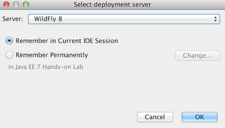Figure 11. WildFly deployment serverThe output looks like as shown.
 Figure 12. Application main page
Figure 12. Application main page
4. Chat Room (Java API for WebSocket)
Purpose: Build a chat room for viewers. In doing so several new features of Java API for WebSocket 1.0 will be introduced and demonstrated by using them in the application.
Estimated Time: 30-45 mins
WebSocket provide a full-duplex and bi-directional communication protocol over a single TCP connection. WebSocket is a combination of IETF RFC 6455 Protocol and W3C JavaScript WebSocket API (a Candidate Recommendation as of this writing). The protocol defines an opening handshake and data transfer. The API enables Web pages to use the WebSocket protocol for two-way communication with the remote host.
JSR 356 defines a standard API for creating WebSocket applications in the Java EE 7 Platform. The JSR provides support for:
-
Create WebSocket endpoint using annotations and interface
-
Initiating and intercepting WebSocket events
-
Creation and consumption of WebSocket text and binary messages
-
Configuration and management of WebSocket sessions
-
Integration with Java EE security model
This section will build a chat room for movie viewers.
-
Right-click on ‘Source Packages’ , select ‘New’, ‘Java Class’. Give the class name as ‘ChatServer’, package as ‘org.javaee7.movieplex7.chat’, and click on ‘Finish’.
-
Change the class such that it looks like:
@ServerEndpoint("/websocket") public class ChatServer { private static final Set<Session> peers = Collections.synchronizedSet(new HashSet<Session>()); @OnOpen public void onOpen(Session peer) { peers.add(peer); } @OnClose public void onClose(Session peer) { peers.remove(peer); } @OnMessage public void message(String message, Session client) throws IOException, EncodeException { for (Session peer : peers) { peer.getBasicRemote().sendText(message); } } }In this code:
-
@ServerEndpointdecorates the class to be a WebSocket endpoint. The value defines the URI where this endpoint is published. -
@OnOpenand@OnClosedecorate the methods that must be called when WebSocket session is opened or closed. The peer parameter defines the client requesting connection initiation and termination. -
@OnMessagedecorates the message that receives the incoming WebSocket message. The first parameter, message, is the payload of the message. The second parameter,client, defines the other end of the WebSocket connection. The method implementation transmits the received text message to all clients connected to this endpoint.Resolve the imports by right-clicking in the editor and selecting ‘Fix Imports’ or (Command+Shift+I shortcut on OSX or Ctrl+Shift+I on Windows).
WarningMake sure to pick java.websocket.Sessionfor resolving imports. This is not the default option shown by NetBeans.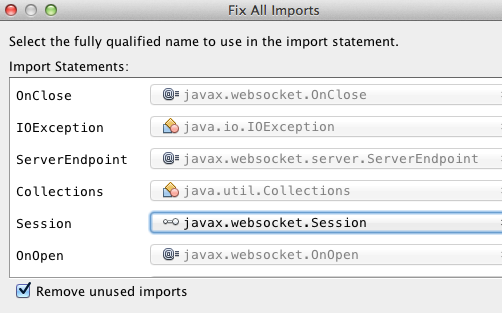Figure 13. javax.websocket.Session importRight-click again in the editor pane and select ‘Format’ to format your code.
-
-
In ‘Web Pages’, select ‘New’, ‘Folder’, give the folder name as ‘chat’ and click on ‘Finish’.
-
Right-click on the newly created folder, select ‘New’, ‘Other’, ‘Java Server Faces’, ‘Facelets Template Client’, give the File Name as ‘chatroom’. Click on ‘Browse’ next to ‘Template:’, expand ‘Web Pages’, ‘WEB-INF’, select ‘template.xhtml’, and click on ‘Select File’. Click on ‘Finish’.
 Figure 14. Choose template
Figure 14. Choose templateIn this file, remove <ui:define> sections where name attribute value is ‘top’ and ‘left’. These sections are inherited from the template.
Replace
<ui:define>section with ‘content’ name such that it looks like:<ui:define name="content"> <form action=""> <table> <tr> <td> Chat Log<br/> <textarea readonly="true" rows="6" cols="50" id="chatlog"></textarea> </td> <td> Users<br/> <textarea readonly="true" rows="6" cols="20" id="users"></textarea> </td> </tr> <tr> <td colspan="2"> <input id="textField" name="name" value="Duke" type="text"/> <input onclick="join();" value="Join" type="button"/> <input onclick="send_message();" value="Send" type="button"/><p/> <input onclick="disconnect();" value="Disconnect" type="button"/> </td> </tr> </table> </form> <div id="output"></div> <script language="javascript" type="text/javascript" src="${facesContext.externalContext.requestContextPath}/chat/websocket.js"></script> </ui:define>The code builds an HTML form that has two textareas – one to display the chat log and the other to display the list of users currently logged. A single text box is used to take the user name or the chat message. Clicking on ‘Join’ button takes the value as user name and clicking on ‘Send’ takes the value as chat message.
JavaScript methods are invoked when these buttons are clicked and these are explained in the next section. The chat messages are sent and received as WebSocket payloads. There is an explicit button to disconnect the WebSocket connection.
outputdiv is the placeholder for status messages. The WebSocket initialization occurs in ‘websocket.js’ included at the bottom of the fragment. -
Right-click on ‘chat’ in ‘Web Pages’, select ‘New’, ‘Other’, ‘Web’ categories, ‘JavaScript File’ file type. Click on ‘Next’.
Give the name as ‘websocket’ and click on ‘Finish’.
-
Edit the contents of ‘websocket.js’ such that it looks like:
var wsUri = 'ws://' + document.location.host + document.location.pathname.substr(0, document.location.pathname.indexOf("/faces")) + '/websocket'; console.log(wsUri); var websocket = new WebSocket(wsUri); var textField = document.getElementById("textField"); var users = document.getElementById("users"); var chatlog = document.getElementById("chatlog"); var username; websocket.onopen = function(evt) { onOpen(evt); }; websocket.onmessage = function(evt) { onMessage(evt); }; websocket.onerror = function(evt) { onError(evt); }; websocket.onclose = function(evt) { onClose(evt); }; var output = document.getElementById("output"); function join() { username = textField.value; websocket.send(username + " joined"); } function send_message() { websocket.send(username + ": " + textField.value); } function onOpen() { writeToScreen("CONNECTED"); } function onClose() { writeToScreen("DISCONNECTED"); } function onMessage(evt) { writeToScreen("RECEIVED: " + evt.data); if (evt.data.indexOf("joined") !== -1) { users.innerHTML += evt.data.substring(0, evt.data.indexOf(" joined")) + "\n"; } else { chatlog.innerHTML += evt.data + "\n"; } } function onError(evt) { writeToScreen('<span style="color: red;">ERROR:</span> ' + evt.data); } function disconnect() { websocket.close(); } function writeToScreen(message) { var pre = document.createElement("p"); pre.style.wordWrap = "break-word"; pre.innerHTML = message; output.appendChild(pre); }The WebSocket endpoint URI is calculated by using standard JavaScript variables and appending the URI specified in the
ChatServerclass. WebSocket is initialized by calling newWebSocket(...). Event handlers are registered for lifecycle events usingonXXXmessages. The listeners registered in this script are explained in the table.Listeners Called When onOpen(evt)WebSocket connection is initiated
onMessage(evt)WebSocket message is received
onError(evt)Error occurs during the communication
onClose(evt)WebSocket connection is terminated
Any relevant data is passed along as parameter to the function. Each method prints the status on the browser using
writeToScreenutility method. The join method sends a message to the endpoint that a particular user has joined. The endpoint then broadcasts the message to all the listening clients. Thesend_messagemethod appends the logged in user name and the value of the text field and broadcasts to all the clients similarly. TheonMessagemethod updates the list of logged in users as well. -
Edit ‘WEB-INF/template.xhtml’ and change:
<h:outputLink value="item2.xhtml">Item 2</h:outputLink>to
<h:outputLink value="${facesContext.externalContext.requestContextPath}/faces/chat/chatroom.xhtml"> Chat Room </h:outputLink>The
outputLinktag renders an HTML anchor tag with anhrefattribute.${facesContext.externalContext.requestContextPath}provides the request URI that identifies the web application context for this request. This allows the links in the left navigation bar to be fully-qualified URLs. -
Run the project by right clicking on the project and selecting ‘Run’. The browser shows localhost:8080/movieplex7.
 Figure 15. Chatroom link on main page
Figure 15. Chatroom link on main pageClick on ‘Chat Room’ to see the output.
The ‘CONNECTED’ status message is shown and indicates that the WebSocket connection with the endpoint is established.
 Figure 16. Chatroom output
Figure 16. Chatroom outputPlease make sure your browser supports WebSocket in order for this page to show up successfully. Chrome 14.0+, Firefox 11.0+, Safari 6.0+, and IE 10.0+ are the browsers that support WebSocket. A complete list of supported browsers is available at caniuse.com/websockets.
Open the URI localhost:8080/movieplex7 in another browser window. Enter ‘Duke’ in the text box in the first browser and click ‘Join’.
 Figure 17. Chatroom with single user
Figure 17. Chatroom with single userNotice that the user list and the status message in both the browsers gets updated. Enter ‘James’ in the text box of the second browser and click on ‘Join’. Once again the user list and the status message in both the browsers is updated. Now you can type any messages in any of the browser and click on ‘Send’ to send the message.
The output from two different browsers after the initial greeting looks like as shown.
 Figure 18. Chatroom with two users
Figure 18. Chatroom with two usersHere it shows output from Chrome on the top and Firefox on the bottom.
Chrome Developer Tools or Firebug in Firefox can be used to monitor WebSocket traffic.
5. Ticket Sales (Batch Applications for the Java Platform)
Purpose: Read the total sales for each show and populate the database. In doing so several new features of Java API for Batch Processing 1.0 will be introduced and demonstrated by using them in the application.
Estimated Time: 30-45 mins
Batch Processing is execution of series of ‘jobs’ that is suitable for non-interactive, bulk-oriented and long-running tasks. Batch Applications for the Java Platform (JSR 352) will define a programming model for batch applications and a runtime for scheduling and executing jobs.

The core concepts of Batch Processing are:
-
A Job is an instance that encapsulates an entire batch process. A job is typically put together using a Job Specification Language and consists of multiple steps. The Job Specification Language for JSR 352 is implemented with XML and is referred as ‘Job XML’.
-
A Step is a domain object that encapsulates an independent, sequential phase of a job. A step contains all of the information necessary to define and control the actual batch processing.
-
JobOperator provides an interface to manage all aspects of job processing, including operational commands, such as start, restart, and stop, as well as job repository commands, such as retrieval of job and step executions.
-
JobRepository holds information about jobs current running and jobs that run in the past. JobOperator provides access to this repository.
-
Reader-Processor-Writer pattern is the primary pattern and is called as Chunk-oriented Processing. In this, ItemReader reads one item at a time, ItemProcessor processes the item based upon the business logic, such as calculate account balance and hands it to ItemWriter for aggregation. Once the chunk numbers of items are aggregated, they are written out, and the transaction is committed.
This section will read the cumulative sales for each show from a CSV file and populate them in a database.
-
Right-click on Source Packages, select ‘New’, ‘Java Package’, specify the value as ‘org.javaee7.movieplex7.batch’, and click on ‘Finish’.
-
Right-click on newly created package, select ‘New’, ‘Java Class’, specify the name as ‘SalesReader’. Make this class extend from ‘AbstractItemReader’ by changing the class definition and add:
extends AbstractItemReaderAbstractItemReaderis an abstract class that implementsItemReaderinterface. TheItemReaderinterface defines methods that read a stream of items for chunk processing. This reader implementation returns a String item type as indicated in the class definition.Add
@Namedas a class-level annotations and it allows the bean to be injected in Job XML. Add@Dependentas another class-level annotation to mark this bean as a bean defining annotation so that this bean is available for injection.Resolve the imports.
-
Override
open()method to initialize the reader by adding the following code:private BufferedReader reader; public void open(Serializable checkpoint) throws Exception { reader = new BufferedReader( new InputStreamReader( Thread.currentThread() .getContextClassLoader() .getResourceAsStream("META-INF/sales.csv"))); }This method initializes a BufferedReader from ‘META-INF/sales.csv’ that is bundled with the application.
Sampling of the first few lines from ‘sales.csv’ is shown below:
1,500.00 2,660.00 3,80.00 4,470.00 5,1100.x0Each line has a show identifier comma separated by the total sales for that show. Note that the last line (5th record in the sample) has an intentional typo. In addition, 17th record also has an additional typo. The lab will use these lines to demonstrate how to handle parsing errors.
-
Override the following method from the abstract class:
@Override public String readItem() { String string = null; try { string = reader.readLine(); } catch (IOException ex) { ex.printStackTrace(); } return string; }The
readItemmethod returns the next item from the stream. It returnsnullto indicate end of stream. Note end of stream indicates end of chunk, so the current chunk will be committed and the step will end.Resolve the imports.
-
Right-click on ‘org.javaee7.movieplex7.batch’ package, select ‘New’, ‘Java Class’, specify the name as ‘SalesProcessor’. Change the class definition and add:
implements ItemProcessorItemProcessoris an interface that defines a method that is used to operate on an input item and produce an output item. This processor accepts a String input item from the reader,SalesReaderin our case, and returns aSalesinstance to the writer (coming shortly).Salesis the pre-packaged JPA entity with the application starter source code.Add
@Namedand@Dependentas class-level annotations so that it allows the bean to be injected in Job XML.Resolve the imports.
-
Add implementation of the abstract method from the interface as:
@Override public Sales processItem(Object s) { Sales sales = new Sales(); StringTokenizer tokens = new StringTokenizer((String)s, ","); sales.setId(Integer.parseInt(tokens.nextToken())); sales.setAmount(Float.parseFloat(tokens.nextToken())); return sales; }This method takes a
Stringparameter coming from theSalesReader, parses the value, populates them in theSalesinstance, and returns it. This is then aggregated with the writer.The method can return null indicating that the item should not be aggregated. For example, the parsing errors can be handled within the method and return null if the values are not correct. However this method is implemented where any parsing errors are thrown as exception. Job XML can be instructed to skip these exceptions and thus that particular record is skipped from aggregation as well (shown later).
Resolve the imports.
-
Right-click on
org.javaee7.movieplex7.batchpackage, select ‘New’, ‘Java Class’, specify the name as ‘SalesWriter’. Change the class definition and add:extends AbstractItemWriterAbstractItemWriteris an abstract class that implementsItemWriterinterface. The ItemWriter interface defines methods that write to a stream of items for chunk processing. This writer writes a list ofSalesitems.Add
@Namedand@Dependentas class-level annotations so that it allows the bean to be injected in Job XML.Resolve the imports.
-
Inject
EntityManageras:@PersistenceContext EntityManager em;Override
writeItemsmethod from the abstract class by adding the following code:@Override @Transactional public void writeItems(List list) { for (Sales s : (List<Sales>)list) { em.persist(s); } }Batch runtime aggregates the list of
Salesinstances returned from theSalesProessorand makes it available as List in this method. This method iterates over the list and persist each item in the database.The method also specifies
@Transactionalas a method level annotation. This is a new annotation introduced by JTA 1.2 that provides the ability to control transaction boundaries on CDI managed beans. This provides the semantics of EJB transaction attributes in CDI beans without dependencies such as RMI. This support is implemented via an implementation of a CDI interceptor that conducts the necessary suspending, resuming, etc.In this case, a transaction is automatically started before the method is called, committed if no checked exceptions are thrown, and rolled back if runtime exceptions are thrown. This behavior can be overridden using
rollbackOnanddontRollbackOnattributes of the annotation.NoteEach chunk is processed within a container-managed transaction already. There is really no need for
@TransactionalonwriteItemsmethod but shows a usage for the annotation.Resolve the imports.
-
Create Job XML that defines the job, step, and chunk.
In ‘Files’ tab, expand the project → ‘src’ → ‘main’ → ‘resources’, right-click on ‘META-INF’, select ‘New’, ‘Folder’, specify the name as ‘batch-jobs’, and click on ‘Finish’.
Right-click on the newly created folder, select ‘New’, ‘Other’, select ‘XML’, ‘XML Document’, click on ‘Next >’, give the name as ‘eod-sales’, click on ‘Next’, take the default, and click on ‘Finish’.
Replace contents of the file with the following:
<job id="endOfDaySales" xmlns="http://xmlns.jcp.org/xml/ns/javaee" version="1.0"> <step id="populateSales"> <chunk item-count="3" skip-limit="5"> <reader ref="salesReader"/> <processor ref="salesProcessor"/> <writer ref="salesWriter"/> <skippable-exception-classes> <include class="java.lang.NumberFormatException"/> </skippable-exception-classes> </chunk> </step> </job>This code shows that the job has one step of chunk type. The
<reader>,<processor>, and<writer>elements define the CDI bean name of the implementations ofItemReader,ItemProcessor, andItemWriterinterfaces. Theitem-countattribute defines that 3 items are read/processed/aggregated and then given to the writer. The entire reader/processor/writer cycle is executed within a transaction.The
<skippable-exception-classes>element specifies a set of exceptions to be skipped by chunk processing.CSV file used for this lab has intentionally introduced couple of typos that would generate
NumberFormatException. Specifying this element allows skipping the exception, ignore that particular element, and continue processing. If this element is not specified then the batch processing will halt. Theskip-limitattribute specifies the number of exceptions a step will skip. -
Lets invoke the batch job.
In ‘Projects’ tab, right-click on ‘org.javaee7.movieplex7.batch’ package, select ‘New’, ‘Java Class’. Enter the name as ‘SalesBean’ and click on ‘Finish’ button.
Add the following code to the bean:
public void runJob() { try { JobOperator jo = BatchRuntime.getJobOperator(); long jobId = jo.start("eod-sales", new Properties()); System.out.println("Started job: with id: " + jobId); } catch (JobStartException ex) { ex.printStackTrace(); } }This method uses
BatchRuntimeto get an instance ofJobOperator, which is then used to start the job.JobOperatoris the interface for operating on batch jobs. It can be used to start, stop, and restart jobs. It can additionally inspect job history, to discover what jobs are currently running and what jobs have previously run.Add
@Namedand@RequestScopedas class-level annotations. This allows the bean to be injectable in an EL expression.Resolve the imports.
 Figure 20. RequestScoped import
Figure 20. RequestScoped import -
Inject
EntityManagerFactoryin the class as:@PersistenceUnit EntityManagerFactory emf;and add the following method:
public List<Sales> getSalesData() { return emf. createEntityManager(). createNamedQuery("Sales.findAll", Sales.class). getResultList(); }This method uses a pre-defined
@NamedQueryto query the database and return all the rows from the table.Resolve the imports.
-
Right-click on ‘Web Pages’, select ‘New’, ‘Folder’, specify the name as ‘batch’, and click on ‘Finish’.
Right-click on the newly created folder, select ‘New’, ‘Other’, ‘JavaServer Faces’, ‘Facelets Template Client’, and click on ‘Next >’.
Give the File Name as ‘sales’. Click on ‘Browse’ next to ‘Template:’, expand ‘Web Pages’, ‘WEB-INF’, select ‘template.xhtml’, and click on ‘Select File’. Click on ‘Finish’.
In this file, remove
<ui:define>sections where name attribute value is ‘top’ and ‘left’. These sections are inherited from the template.Replace
<ui:define>section with ‘content’ name such that it looks like:<ui:define name="content"> <h1>Movie Sales</h1> <h:form> <h:dataTable value="#{salesBean.salesData}" var="s" border="1"> <h:column> <f:facet name="header"> <h:outputText value="Show ID" /> </f:facet> #{s.id} </h:column> <h:column> <f:facet name="header"> <h:outputText value="Sales" /> </f:facet> #{s.amount} </h:column> </h:dataTable> <h:commandButton value="Run Job" action="sales" actionListener="#{salesBean.runJob()}"/> <h:commandButton value="Refresh" action="sales" /> </h:form> </ui:define>This code displays the show identifier and sales from that show in a table by invoking
SalesBean.getSalesData(). First command button allows invoking the job that processes the CSV file and populates the database. The second command button refreshes the page.Right-click on the yellow bulb to fix namespace prefix/URI mapping for
h:. This needs to be repeated forf:prefix. -
Add the following code in
template.xhtmlalong with other <outputLink>s:<p/><h:outputLink value="${facesContext.externalContext.requestContextPath}/faces/batch/sales.xhtml"> Sales </h:outputLink> -
Run the project to see the output as shown.
 Figure 21. Sales link on main page
Figure 21. Sales link on main pageNotice, a new ‘Sales’ entry is displayed in the left navigation bar.
-
Click on ‘Sales’ to see the output as shown.
 Figure 22. Movie Sales page
Figure 22. Movie Sales pageThe empty table indicates that there is no sales data in the database.
-
Click on ‘Run Job’ button to initiate data processing of CSV file. Look for ‘Waiting for localhost’ in the browser status bar, wait for a couple of seconds for the processing to finish, and then click on ‘Refresh’ button to see the updated output as shown.
 Figure 23. Movie Sales output page
Figure 23. Movie Sales output pageNow the table is populated with the sales data.
Note that record 5 is missing from the table, as this records did not have correct numeric entries for the sales total. The Job XML for the application explicitly mentioned to skip such errors.
6. View and Delete Movie (Java API for RESTful Web Services)
Purpose: View, and delete a movie. In doing so several new features of JAX-RS 2 will be introduced and demonstrated by using them in the application.
Estimated Time: 30-45 mins
JAX-RS 2 defines a standard API to create, publish, and invoke a REST endpoint. JAX-RS 2 adds several new features to the API:
-
Client API that can be used to access Web resources and provides integration with JAX-RS Providers. Without this API, the users need to use a low-level HttpUrlConnection to access the REST endpoint.
-
Asynchronous processing capabilities in Client and Server that enables more scalable applications.
-
Message Filters and Entity Interceptors as well-defined extension points to extend the capabilities of an implementation.
-
Validation constraints can be specified to validate the parameters and return type.
This section will provide the ability to view all the movies, details of a selected movie, and delete an existing movie using the JAX-RS Client API.
-
Right-click on ‘Source Packages’, select ‘New’, ‘Java Class’. Give the class name as ‘MovieClientBean’, package as ‘org.javaee7.movieplex7.client’, and click on ‘Finish’.
This bean will be used to invoke the REST endpoint.
-
Add
@Namedand@RequestScopedclass-level annotations. This allows the class to be injected in an EL expression and also defines the bean to be automatically activated and passivated with the request.Resolve the imports.
WarningMake sure to pick javax.enterprise.context.RequestScopedclass.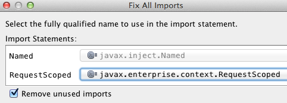Figure 24. RequestScoped import -
Add the following code to the class:
Client client; WebTarget target; @Inject HttpServletRequest httpServletRequest; @PostConstruct public void init() { client = ClientBuilder.newClient(); target = client .target("http://" + httpServletRequest.getLocalName() + ":" + httpServletRequest.getLocalPort() + "/" + httpServletRequest.getContextPath() + "/webresources/movie/"); } @PreDestroy public void destroy() { client.close(); }ClientBuilderis the main entry point to the Client API. It uses a fluent builder API to invoke REST endpoints. A newClientinstance is created using the default client builder implementation provided by the JAX-RS implementation provider. Client are heavy-weight objects that manage the client-side communication infrastructure. It is highly recommended to create only required number of instances of Client and close it appropriately.In this case,
Clientinstance is created and destroyed in the lifecycle callback methods. The endpoint URI is set on this instance by calling the target method. Note that the endpoint address is dynamically created by injecting an instance ofHttpServletRequest. This is a new feature added in CDI 1.1 -
Add the following method to the class:
public Movie[] getMovies() { return target .request() .get(Movie[].class); }A request is prepared by calling the request method. HTTP GET method is invoked by calling get method. The response type is specified in the last method call and so return value is of the type
Movie[]. -
Right-click on ‘Web Pages’, select ‘New’, ‘Folder’, specify the name as ‘client’, and click on ‘Finish’.
Right-click on the newly created folder, select ‘New’, ‘Other’, ‘JavaServer Faces’, ‘Facelets Template Client’, and click on ‘Next >’.
Give the File Name as ‘movies’. Click on ‘Browse’ next to ‘Template:’, expand ‘Web Pages’, ‘WEB-INF’, select ‘template.xhtml’, and click on ‘Select File’. Click on ‘Finish’.
-
In this file, remove
<ui:define>sections where name attribute value is ‘top’ and ‘left’. These sections are inherited from the template.Replace
<ui:define>section with ‘content’ name such that it looks like:<ui:define name="content"> <h:form prependId="false"> <h:selectOneRadio value="#{movieBackingBean.movieId}" layout="pageDirection"> <c:forEach items="#{movieClientBean.movies}" var="m"> <f:selectItem itemValue="#{m.id}" itemLabel="#{m.name}"/> </c:forEach> </h:selectOneRadio> <h:commandButton value="Details" action="movie" /> </h:form> </ui:define>This code fragment invokes
getMoviesmethod fromMovieClientBean, iterates over the response in a for loop, and display the name of each movie with a radio button. The selected radio button value is bound to the EL expression#{movieBackingBean.movieId}.The code also has a button with ‘Details’ label and looks for ‘movie.xhtml’ in the same directory. We will create this file later.
Click on the yellow bulb in the left bar to resolve the namespace prefix-to-URI resolution. This needs to be completed for
h:,c:, andf:prefixes. Figure 25. Namespace prefix imports
Figure 25. Namespace prefix imports -
Right-click on ‘org.javaee7.movieplex7.client’ package, select ‘New’, ‘Java Class’, specify the value as ‘MovieBackingBean’ and click on ‘Finish’.
Add the following field:
int movieId;Add getters/setters by right-clicking on the editor pane and selecting ‘Insert Code’ (Ctrl+I shortcut on OSX). Select the field and click on ‘Generate’.
Add
@Namedand@SessionScopedclass-level annotations and implementsSerializable.Resolve the imports.
WarningMake sure to import javax.enterprise.context.SessionScoped. -
In ‘template.xhtml’, add the following code along with other <outputLink>s:
<p/><h:outputLink value="${facesContext.externalContext.requestContextPath}/faces/client/movies.xhtml"> Movies </h:outputLink>Running the project (Fn+F6 shortcut on OSX) and clicking on ‘Movies’ in the left navigation bar shows the output as shown.
 Figure 26. List of movies output page
Figure 26. List of movies output pageThe list of all the movies with a radio button next to them is displayed.
-
In
MovieClientBean, injectMovieBackingBeanto read the value of selected movie from the page. Add the following code:@Inject MovieBackingBean bean; -
In
MovieClientBean, add the following method:public Movie getMovie() { Movie m = target .path("{movie}") .resolveTemplate("movie", bean.getMovieId()) .request() .get(Movie.class); return m; }This code reuses the
ClientandWebTargetinstances created in@PostConstruct. It also adds a variable part to the URI of the REST endpoint, defined using{movie}, and binds it to a concrete value usingresolveTemplatemethod. The return type is specified as a parameter to the get method. -
Right-click on ‘client’ folder, select ‘New’, ‘Facelets Template Client’, give the File Name as ‘movie’. Click on ‘Browse’ next to ‘Template:’, expand ‘Web Pages’, ‘WEB-INF’, select ‘template.xhtml’, and click on ‘Select File’. Click on ‘Finish’.
-
In this file, remove
<ui:define>sections where name attribute value is ‘top’ and ‘left’. These sections are inherited from the template.Replace
<ui:define>with ‘content’ name such that it looks like:<ui:define name="content"> <h1>Movie Details</h1> <h:form> <table cellpadding="5" cellspacing="5"> <tr> <th align="left">Movie Id:</th> <td>#{movieClientBean.movie.id}</td> </tr> <tr> <th align="left">Movie Name:</th> <td>#{movieClientBean.movie.name}</td> </tr> <tr> <th align="left">Movie Actors:</th> <td>#{movieClientBean.movie.actors}</td> </tr> </table> <h:commandButton value="Back" action="movies" /> </h:form> </ui:define>Click on the yellow-bulb to resolve the namespace prefix-URI mapping for
h:.The output values are displayed by calling the
getMoviemethod and using theid,name, andactorsproperty values. -
Run the project, select ‘Movies’ in the left navigation bar, select a radio button next to any movie, and click on details to see the output as shown.
 Figure 27. Movie Details page
Figure 27. Movie Details pageClick on the ‘Back’ button to select another movie.
-
Add the ability to delete a movie. In ‘movies.xhtml’, add the following code with other <commandButton>.
<h:commandButton value="Delete" action="movies" actionListener="#{movieClientBean.deleteMovie()}"/>This button displays a label ‘Delete’, invokes the method deleteMovie from ‘MovieClientBean’, and then renders ‘movies.xhtml’.
-
Add the following code to ‘MovieClientBean’:
public void deleteMovie() { target .path("{movieId}") .resolveTemplate("movieId", bean.getMovieId()) .request() .delete(); }This code again reuses the
ClientandWebTargetinstances created in@PostConstruct. It also adds a variable part to the URI of the REST endpoint, defined using{movieId}, and binds it to a concrete value usingresolveTemplatemethod. The URI of the resource to be deleted is prepared and then delete method is called to delete the resource.Make sure to resolve the imports.
Running the project shows the output shown.
 Figure 28. Delete button
Figure 28. Delete buttonSelect a movie and click on Delete button. This deletes the movie from the database and refreshes list on the page. Note that a redeploy of the project will delete all the movies anyway and add them all back.
7. Add Movie (Java API for JSON Processing)
Purpose: Add a new movie. In doing so several new features of the Java API for JSON Processing 1.0 will be introduced and demonstrated by using them in the application.
Estimated Time: 30-45 mins
Java API for JSON Processing provides a standard API to parse and generate JSON so that the applications can rely upon a portable API. This API will provide:
-
Produce/Consume JSON in a streaming fashion (similar to StAX API for XML)
-
Build a Java Object Model for JSON (similar to DOM API for XML)
This section will define a JAX-RS Entity Providers that will allow reading and writing JSON for a Movie POJO. The JAX-RS Client API will request this JSON representation.
JAX-RS Entity Providers supply mapping services between on-the-wire
representations and their associated Java types. Several standard Java
types such as String, byte[], javax.xml.bind.JAXBElement,
java.io.InputStream, java.io.File, and others have a pre-defined mapping
and is required by the specification. Applications may provide their own
mapping to custom types using MessageBodyReader and MessageBodyWriter
interfaces.
This section will provide the ability to add a new movie to the application. Typically, this functionality will be available after proper authentication and authorization.
-
Right-click on Source Packages, select ‘New’, ‘Java Class’, specify the name as ‘MovieReader’, package as ‘org.javaee7.movieplex7.json’ and click on ‘Finish’. Add the following class-level annotations:
-
Right-click on newly created package, select ‘New’, ‘Java Class’, specify the name as ‘MovieReader’, and click on ‘Finish’. Add the following class-level annotations:
@Provider @Consumes(MediaType.APPLICATION_JSON)@Providerallows this implementation to be discovered by the JAX-RS runtime during the provider scanning phase.@Consumesindicates that this implementation will consume a JSON representation of the resource.Make sure to resolve imports from the appropriate package as shown.
 Figure 29. Provider import
Figure 29. Provider import -
Make the class implements
MessageBodyReader<Movie>. Figure 30. Implement abstract methods for MessageBodyReader
Figure 30. Implement abstract methods for MessageBodyReaderClick on the hint (shown as yellow bulb) on the class definition and select ‘Implement all abstract methods’.
-
Change implementation of the
isReadablemethod as:return Movie.class.isAssignableFrom(type);This method ascertains if the
MessageBodyReadercan produce an instance of a particular type. -
Replace the
readFrommethod with:@Override public Movie readFrom( Class<Movie> type, Type type1, Annotation[] antns, MediaType mt, MultivaluedMap<String, String> mm, InputStream in) throws IOException, WebApplicationException { Movie movie = new Movie(); JsonParser parser = Json.createParser(in); while (parser.hasNext()) { switch (parser.next()) { case KEY_NAME: String key = parser.getString(); parser.next(); switch (key) { case "id": movie.setId(parser.getInt()); break; case "name": movie.setName(parser.getString()); break; case "actors": movie.setActors(parser.getString()); break; default: break; } break; default: break; } } return movie; }This code reads a type from the input stream in.
JsonParser, a streaming parser, is created from the input stream. Key values are read from the parser and aMovieinstance is populated and returned.Resolve the imports.
-
Right-click on ‘org.javaee7.movieplex7.json’ package, select ‘New’, ‘Java Class’, specify the name as ‘MovieWriter’, and click on ‘Finish’. Add the following class-level annotations:
@Provider @Produces(MediaType.APPLICATION_JSON)@Providerallows this implementation to be discovered by the JAX-RS runtime during the provider scanning phase.@Producesindicates that this implementation will produce a JSON representation of the resource.Resolve the imports as shown.
 Figure 31. Provider import
Figure 31. Provider import -
Make this class implement
MessageBodyWriterinterface by adding the following code:implements MessageBodyWriter<Movie>Resolve the imports.
The IDE provide a hint to implement abstract methods as:
 Figure 32. Implement abstract methods for MessageBodyWriter
Figure 32. Implement abstract methods for MessageBodyWriterClick on the hint (show as yellow bulb) on the class definition and select ‘Implement all abstract methods’.
-
Change implementation of the
isWritablemethod to:return Movie.class.isAssignableFrom(type);This method ascertains if the
MessageBodyWritersupports a particular type. -
Add implementation of the
getSizemethod as:return -1;Originally, this method was called to ascertain the length in bytes of the serialized form of
t. In JAX-RS 2.0, this method is deprecated and the value returned by the method is ignored by a JAX-RS runtime. AllMessageBodyWriterimplementations are advised to return -1. -
Change implementation of the
writeTomethod to:JsonGenerator gen = Json.createGenerator(entityStream); gen.writeStartObject() .write("id", t.getId()) .write("name", t.getName()) .write("actors", t.getActors()) .writeEnd(); gen.flush();This method writes a type to an HTTP message.
JsonGeneratorwrites JSON data to an output stream in a streaming way. Overloaded write methods are used to write different data types to the stream.Resolve the imports.
-
In ‘Web Pages’, right-click on ‘client’ folder, select ‘New’, ‘Facelets Template Client’. Give the File Name as ‘addmovie’. Click on ‘Browse’ next to ‘Template:’, expand ‘Web Pages’, ‘WEB-INF’, select ‘template.xhtml’, and click on ‘Select File’. Click on ‘Finish’.
-
In this file, remove
<ui:define>sections where name attribute value is ‘top’ and ‘left’. These sections are inherited from the template.Replace
<ui:define>section with ‘content’ name such that it looks like:<ui:define name="content"> <h1>Add a New Movie</h1> <h:form> <table cellpadding="5" cellspacing="5"> <tr> <th align="left">Movie Id:</th> <td><h:inputText value="#{movieBackingBean.movieId}"/></td> </tr> <tr> <th align="left">Movie Name:</th> <td><h:inputText value="#{movieBackingBean.movieName}"/> </td> </tr> <tr> <th align="left">Movie Actors:</th> <td><h:inputText value="#{movieBackingBean.actors}"/></td> </tr> </table> <h:commandButton value="Add" action="movies" actionListener="#{movieClientBean.addMovie()}"/> </h:form> </ui:define>This code creates a form to accept input of
id,name, andactorsof a movie. These values are bound to fields inMovieBackingBean. The click of command button invokes the addMovie method fromMovieClientBeanand then renders ‘movies.xhtml’.Click on the hint (show as yellow bulb) to resolve the namespace prefix/URI mapping as shown.
 Figure 33. Namespace prefix mapping imports
Figure 33. Namespace prefix mapping imports -
Add
movieNameandactorsfield toMovieBackingBeanas:String movieName; String actors;Generate getters and setters by clicking on the menu item ‘Source’ and then ‘Insert Code’.
-
Add the following code to ‘movies.xhtml’
<h:commandButton value="New Movie" action="addmovie" />along with rest of the <commandButton>s.
-
Add the following method in
MovieClientBean:public void addMovie() { Movie m = new Movie(); m.setId(bean.getMovieId()); m.setName(bean.getMovieName()); m.setActors(bean.getActors()); target .register(MovieWriter.class) .request() .post(Entity.entity(m, MediaType.APPLICATION_JSON)); }This method creates a new
Movieinstance, populates it with the values from the backing bean, and POSTs the bean to the REST endpoint. The register method registers a MovieWriter that provides conversion from the POJO to JSON. Media type ofapplication/jsonis specified usingMediaType.APPLICATION_JSON.Resolve the imports as shown
 Figure 34. Entity import
Figure 34. Entity import -
Run the project to see the updated main page as:
 Figure 35. New Movie button
Figure 35. New Movie buttonA new movie can be added by clicking on ‘New Movie’ button.
-
Enter the details as shown:
 Figure 36. Add a New Movie page
Figure 36. Add a New Movie pageClick on ‘Add’ button. The ‘Movie Id’ value has to be greater than 20 otherwise the primary key constraint will be violated. The table definition may be updated to generate the primary key based upon a sequence; however this is not done in the application.
The updated page looks like as shown
 Figure 37. Newly added movie
Figure 37. Newly added movieNote that the newly added movie is now displayed.
8. Movie Points (Java Message Service)
Purpose: Customers accrue points for watching a movie.
Estimated Time: 30-45 mins
Java Message Service 2.0 allows sending and receiving messages between distributed systems. JMS 2 introduced several improvements over the previous version such as:
-
New
JMSContextinterface -
AutoCloseable
JMSContext,Connection, andSession -
Use of runtime exceptions
-
Method chaining on
JMSProducer -
Simplified message sending
This section will provide a page to simulate submission of movie points accrued by a customer. These points are submitted to a JMS queue that is then read synchronously by another bean. JMS queue for further processing, possibly storing in the database using JPA.
-
Right-click on Source Packages, select ‘New’, ‘Java Class’, specify the name as ‘SendPointsBean’, package as ‘org.javaee7.movieplex7.points’, and click on ‘Finish’.
Add the following class-level annotations:
@Named @RequestScopedThis makes the bean to be EL-injectable and automatically activated and passivated with the request.
Resolve the imports.
 Figure 38. RequestScoped import
Figure 38. RequestScoped import -
A message to a JMS Queue is sent after the customer has bought the tickets. Another bean will then retrieve this message and update the points for that customer. This allows the two systems, one generating the data about tickets purchased and the other about crediting the account with the points, completely decoupled.
This lab will mimic the sending and consuming of a message by an explicit call to the bean from a JSF page.
Add the following field to the class:
@NotNull @Pattern(regexp = "^\\d{2},\\d{2}", message = "Message format must be 2 digits, comma, 2 digits, e.g.12,12") private String message;This field contains the message sent to the queue. This field’s value is bound to an inputText in a JSF page (created later). Constraints have been specified on this bean that enable validation of data on form submit. It requires the data to consists of two numerical digits, followed by a comma, and then two more numerical digits. If the message does not meet the validation criteria then the error message to be displayed is specified using message attribute.
This could be thought as conveying the customer identifier and the points accrued by that customer.
Generate getter/setters for this field. Right-click in the editor pane, select ‘Insert Code’ (Ctrl+I shortcut on OSX), select ‘Getter and Setter’, select the field, and click on ‘Generate’.
-
Add the following code to the class:
@Inject JMSContext context; @Resource(lookup = "java:global/jms/pointsQueue") Queue pointsQueue; public void sendMessage() { System.out.println("Sending message: " + message); context.createProducer().send(pointsQueue, message); }The Java EE Platform requires a pre-configured JMS connection factory under the JNDI name
java:comp/DefaultJMSConnectionFactory. If no connection factory is specified then the pre-configured connection factory is used. In a Java EE environment, where CDI is enabled by default anyway, a container-managedJMSContextcan be injected as:@Inject JMSContext context;This code uses the default factory to inject an instance of container-managed
JMSContext.JMSContextis a new interface introduced in JMS 2. This combines in a single object the functionality of two separate objects from the JMS 1.1 API: aConnectionand aSession.When an application needs to send messages it use the
createProducermethod to create aJMSProducerthat provides methods to configure and send messages. Messages may be sent either synchronously or asynchronously.When an application needs to receive messages it uses one of several
createConsumerorcreateDurableConsumermethods to create aJMSConsumer. AJMSConsumerprovides methods to receive messages either synchronously or asynchronously.All messages are then sent to a
Queueinstance (created later) identified byjava:global/jms/pointsQueueJNDI name. The actual message is obtained from the value entered in the JSF page and bound to the message field.Resolve the imports.
WarningMake sure Queueclass is imported fromjavax.jms.Queueinstead of the defaultjava.util.Queue.Click on ‘OK’.
-
Right-click on ‘org.javaee7.movieplex7.points’ package, select ‘New’, ‘Java Class’, specify the name as ‘ReceivePointsBean’.
Add the following class-level annotations:
@JMSDestinationDefinition(name = "java:global/jms/pointsQueue", interfaceName = "javax.jms.Queue") @Named @RequestScopedThis allows the bean to refered from an EL expression. It also activates and passivates the bean with the request.
JMSDestinationDefinitionis a new annotation introduced in JMS 2. It is used by the application to provision the required resources and allow an application to be deployed into a Java EE environment with minimal administrative configuration. This code will create Queue with the JNDI namejava:global/jms/pointsQueue. -
Add the following code to the class:
@Inject JMSContext context; @Resource(lookup="java:global/jms/pointsQueue") Queue pointsQueue; public String receiveMessage() { try (JMSConsumer consumer = context.createConsumer(pointsQueue)) { String message = consumer.receiveBody(String.class); System.out.println("Received message: " + message); return message; } }This code creates
JMSConsumerin a try-with-resources block which is then used to synchronously receive a message. Note thatJMSConsumeris created as an auto-managed resource and so is closed automatically after receiving each message. Alternatively asynchronous message delivery can also be setup using Message Driven Beans. However that is not covered in this lab. -
Add the following method to the class:
public int getQueueSize() { int count = 0; try { QueueBrowser browser = context.createBrowser(pointsQueue); Enumeration elems = browser.getEnumeration(); while (elems.hasMoreElements()) { elems.nextElement(); count++; } } catch (JMSException ex) { ex.printStackTrace(); } return count; }This code creates a
QueueBrowserto look at the messages on a queue without removing them. It calculates and returns the total number of messages in the queue.Make sure to resolve the import from
javax.jms.Queue, take all other defaults. -
Right-click on ‘Web Pages’, select ‘New’, ‘Folder’, specify the name as ‘points’, and click on ‘Finish’.
In ‘Web Pages’, right-click on newly created folder, select ‘Facelets Template Client’, give the File Name as ‘points’. Click on ‘Browse’ next to ‘Template:’, expand ‘Web Pages’, ‘WEB-INF’, select ‘template.xhtml’, and click on ‘Select File’. Click on ‘Finish’.
-
In this file, remove
<ui:define>sections where name attribute value is ‘top’ and ‘left’. These sections are inherited from the template.Replace the
<ui:define>section with ‘content’ name such that it looks like:<ui:define name="content"> <h1>Points</h1> <h:form> Queue size: <h:outputText value="#{receivePointsBean.queueSize}"/><p/> <h:inputText value="#{sendPointsBean.message}"/> <h:commandButton value="Send Message" action="points" actionListener="#{sendPointsBean.sendMessage()}"/> </h:form> <h:form> <h:commandButton value="Receive Message" action="points" actionListener="#{receivePointsBean.receiveMessage()}"/> </h:form> </ui:define>Click on the yellow bulb to resolve namespace prefix/URI mapping for
h:prefix.This page displays the number of messages in the current queue. It provides a text box for entering the message that can be sent to the queue. The first command button invokes
sendMessagemethod fromSendPointsBeanand refreshes the page. Updated queue count, incremented by 1 in this case, is displayed. The second command button invokesreceiveMessagemethod fromReceivePointsBeanand refreshes the page. The queue count is updated again, decremented by 1 in this case.If the message does not meet the validation criteria then the error message is displayed on the screen.
-
Add the following code in ‘template.xhtml’ along with other <outputLink>s:
<p/><h:outputLink value="${facesContext.externalContext.requestContextPath}/faces/points/points.xhtml"> Points </h:outputLink> -
Run the project. The update page looks like as shown:
 Figure 39. Points link on main page
Figure 39. Points link on main pageClick on ‘Points’ to see the output as:
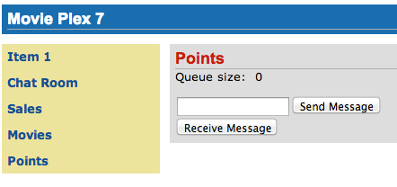Figure 40. Points output pageThe output shows that the queue has 0 messages. Enter a message ‘1212’ in the text box and click on ‘Send Message’ to see the output as shown.
 Figure 41. Validation message on Points page
Figure 41. Validation message on Points pageThis message is not meeting the validation criteria and so the error message is displayed.
Enter a message as ‘12,12’ in the text box and click on ‘Send Message’ button to see the output as:
 Figure 42. Correct input for Points page - Send Message (queue size=1)
Figure 42. Correct input for Points page - Send Message (queue size=1)The updated count now shows that there is 1 message in the queue. Click on ‘Receive Message’ button to see output as:
 Figure 43. Correct input for Points page - Receive Message (queue size=0)
Figure 43. Correct input for Points page - Receive Message (queue size=0)The updated count now shows that the message has been consumed and the queue has 0 messages.
Click on ‘Send Message’ 4 times to see the output as:
 Figure 44. Correct input for Points page - Send Message (queue size=4)
Figure 44. Correct input for Points page - Send Message (queue size=4)The updated count now shows that the queue has 4 messages. Click on ‘Receive Message’ 2 times to see the output as:
 Figure 45. Correct input for Points page - Receive Message (queue size=2)
Figure 45. Correct input for Points page - Receive Message (queue size=2)The count is once again updated to reflect the 2 consumed and 2 remaining messages in the queue.
9. Show Booking (JavaServer Faces)
Purpose: Build pages that allow a user to book a particular movie show in a theater. In doing so a new feature of JavaServer Faces 2.2 will be introduced and demonstrated by using in the application.
Estimated Time: 30-45 mins
JavaServer Faces 2.2 introduces a new feature called Faces Flow that provides an encapsulation of related views/pages with application defined entry and exit points. Faces Flow borrows core concepts from ADF TaskFlow, Spring Web Flow, and Apache MyFaces CODI.
It introduces @FlowScoped CDI annotation for flow-local storage and
@FlowDefinition to define the flow using CDI producer methods. There are
clearly defined entry and exit points with well-defined parameters. This
allows the flow to be packaged together as a JAR or ZIP file and be
reused. The application thus becomes a collection of flows and non-flow
pages. Usually the objects in a flow are designed to allow the user to
accomplish a task that requires input over a number of different views.
This application will build a flow that allows the user to make a movie reservation. The flow will contain four pages:
-
Display the list of movies
-
Display the list of available show timings
-
Confirm the choices
-
Make the reservation and show the ticket
Lets build the application.
-
Items in a flow are logically related to each other and so it is required to keep them together in a directory. In NetBeans, right-click on the ‘Web Pages’, select ‘New’, ‘Folder’, specify the folder name ‘booking’, and click on ‘Finish’.
-
Right-click on the newly created folder, select ‘New’, ‘Facelets Template Client’, give the File Name as ‘booking’. Click on ‘Browse’ next to ‘Template:’, expand ‘Web Pages’, ‘WEB-INF’, select ‘template.xhtml’, and click on ‘Select File’. Click on ‘Finish’.
-
‘booking.xhtml’ is the entry point to the flow (more on this later).
In this file, remove
<ui:define>sections with ‘top’ and ‘left’ name attributes. These sections are inherited from the template.Replace
<ui:define>section with ‘content’ name such that it looks like:<ui:define name="content"> <h2>Pick a movie</h2> <h:form prependId="false"> <h:selectOneRadio value="#{booking.movieId}" layout="pageDirection" required="true"> <f:selectItems value="#{movieFacadeREST.all}" var="m" itemValue="#{m.id}" itemLabel="#{m.name}"/> </h:selectOneRadio> <h:commandButton id="shows" value="Pick a time" action="showtimes" /> </h:form> </ui:define>The code builds an HTML form that displays the list of movies as radio button choices. The chosen movie is bound to
#{booking.movieId}which will be defined as a flow-scoped bean. The value of action attribute on commandButton refers to the next view in the flow, i.e. ‘showtimes.xhtml’ in the same directory in our case.Click on the yellow bulb as shown and click on the suggestion to add namespace prefix/URI mapping for
h:. Repeat the same forf:prefix as well. Figure 46. Namespace prefix mapping imports
Figure 46. Namespace prefix mapping imports -
Right-click on ‘Source Packages’, select ‘New’, ‘Java Class’. Specify the class name as ‘Booking’ and the package name as ‘org.javaee7.movieplex7.booking’.
Add
@Namedclass-level annotation to make the class EL-injectable.Add
@FlowScoped("booking")to define the scope of bean as the flow. The bean is automatically activated and passivated as the flow is entered or exited.Add the following field:
int movieId;and generate getters/setters by going to ‘Source’, ‘Insert Code’, selecting ‘Getter and Setter’, and select the field.
Inject
EntityManagerin this class by adding the following code:@PersistenceContext EntityManager em;Add the following convenience method:
public String getMovieName() { try { return em.createNamedQuery("Movie.findById", Movie.class) .setParameter("id", movieId) .getSingleResult() .getName(); } catch (NoResultException e) { return ""; } }This method will return the movie name based upon the selected movie.
Alternatively, movie id and name may be passed from the selected radio button and parsed in the backing bean. This will reduce an extra trip to the database.
Resolve the imports.
-
Create ‘showtimes.xhtml’ in the ‘booking’ folder following the steps used to create ‘booking.xhtml’.
In this file, remove
<ui:define>sections with ‘top’ and ‘left’ name attributes. These sections are inherited from the template.Replace
<ui:define>section with ‘content’ name such that it looks like:<ui:define name="content"> <h2>Show Timings for <font color="red">#{booking.movieName}</font></h2> <h:form> <h:selectOneRadio value="#{booking.startTime}" layout="pageDirection" required="true"> <c:forEach items="#{timeslotFacadeREST.all}" var="s"> <f:selectItem itemValue="#{s.id},#{s.startTime}" itemLabel="#{s.startTime}"/> </c:forEach> </h:selectOneRadio> <h:commandButton value="Confirm" action="confirm" /> <h:commandButton id="back" value="Back" action="booking" immediate="true"/> </h:form> </ui:define>This code builds an HTML form that displays the chosen movie name and all the show times.
#{timeslotFacadeREST.all}returns the list of all the movies and iterates over them using ac:forEachloop. The id and start time of the selected show are bound to#{booking.startTime}. Command button with value ‘Back’ allows going back to the previous page and the other command button with value ‘Confirm’ takes to the next view in the flow, ‘confirm.xhtml’ in our case.Typically a user will expect the show times only for the selected movie but all the show times are shown here. This allows us to demonstrate going back and forth within a flow if an incorrect show time for a movie is chosen. A different query may be written that displays only the shows available for this movie; however this is not part of the application.
Right-click on the yellow bulb to fix namespace prefix/URI mapping for
h:. This needs to be repeated forc:andf:prefix as well. -
Add the following fields to the
Bookingclass:String startTime; int startTimeId;And the following methods:
public String getStartTime() { return startTime; } public void setStartTime(String startTime) { StringTokenizer tokens = new StringTokenizer(startTime, ","); startTimeId = Integer.parseInt(tokens.nextToken()); this.startTime = tokens.nextToken(); } public int getStartTimeId() { return startTimeId; }These methods will parse the values received from the form. Also add the following method:
public String getTheater() { // for a movie and show try { // Always return the first theater List<ShowTiming> list = em.createNamedQuery("ShowTiming.findByMovieAndTimingId", ShowTiming.class) .setParameter("movieId", movieId) .setParameter("timingId", startTimeId) .getResultList(); if (list.isEmpty()) return "none"; return list .get(0) .getTheaterId() .getId() .toString(); } catch (NoResultException e) { return "none"; } }This method will find the first theater available for the chosen movie and show the timing.
Additionally a list of theaters offering that movie may be shown in a separate page.
Resolve the imports.
-
Create ‘confirm.xhtml’ page in the ‘booking’ folder by following the steps used to create ‘booking.xhtml’.
In this file, remove
<ui:define>sections wht ‘top’ and ‘left’ name attributes. These sections are inherited from the template.Replace ‘<ui:define>’ section with ‘content’ name such that it looks like:
<ui:define name="content"> <c:choose> <c:when test="#{booking.theater == 'none'}"> <h2>No theater found, choose a different time</h2> <h:form> Movie name: #{booking.movieName}<p/> Starts at: #{booking.startTime}<p/> <h:commandButton id="back" value="Back" action="showtimes"/> </h:form> </c:when> <c:otherwise> <h2>Confirm ?</h2> <h:form> Movie name: #{booking.movieName}<p/> Starts at: #{booking.startTime}<p/> Theater: #{booking.theater}<p/> <h:commandButton id="next" value="Book" action="print"/> <h:commandButton id="back" value="Back" action="showtimes"/> </h:form> </c:otherwise> </c:choose> </ui:define>The code displays the selected movie, show timing, and theater if available. The reservation can proceed if all three are available. ‘print.xhtml’ is the last page that shows the confirmed reservation and is shown when ‘Book’ commandButton is clicked.
actionListenercan be added tocommandButtonto invoke the business logic for making the reservation. Additional pages may be added to take the credit card details and email address.Right-click on the yellow bulb to fix namespace prefix/URI mapping for ‘c:’. This needs to be repeated for ‘h:’ prefix as well.
-
Create ‘print.xhtml’ page in the ‘booking’ folder by following the steps used to create ‘booking.xhtml’.
In this file, remove
<ui:define>sections wht ‘top’ and ‘left’ name attributes. These sections are inherited from the template.Replace
<ui:define>section with ‘content’ name such that it looks like:<ui:define name="content"> <h2>Reservation Confirmed</h2> <h:form> Movie name: #{booking.movieName}<p/> Starts at: #{booking.startTime}<p/> Theater: #{booking.theater}<p/> <h:commandButton id="home" value="home" action="goHome" /><p/> </h:form> </ui:define>This code displays the movie name, show timings, and the selected theater.
Right-click on the yellow bulb to fix namespace prefix/URI mapping for ‘h:’.
The
commandButtoninitiates exit from the flow. Theactionattribute defines a navigation rule that will be defined in the next step. -
‘booking.xhtml’, ‘showtimes.xhtml’, ‘confirm.xhtml’, and ‘print.xhtml’ are all in the same directory. Now the runtime needs to be informed that the views in this directory are to be treated as view nodes in a flow. This can be done declaratively by adding ‘booking/booking-flow.xml’ or programmatically by having a class with a method with the following annotations:
@Produces @FlowDefinitionThis lab takes the declarative approach.
Right-click on ‘Web Pages/booking’ folder, select ‘New’, ‘Other’, ‘XML’, ‘XML Document’, give the name as ‘booking-flow’, click on ‘Next>’, take the default of ‘Well-formed Document’, and click on ‘Finish’.
Replace the generated code with the following:
<faces-config version="2.2" xmlns="http://xmlns.jcp.org/xml/ns/javaee" xmlns:xsi="http://www.w3.org/2001/XMLSchema-instance" xsi:schemaLocation="http://xmlns.jcp.org/xml/ns/javaee http://xmlns.jcp.org/xml/ns/javaee/web-facesconfig_2_2.xsd"> <flow-definition id="booking"> <flow-return id="goHome"> <from-outcome>/index</from-outcome> </flow-return> </flow-definition> </faces-config>This defines the flow graph. It uses the parent element used in a standard
faces-config.xmlbut defines a<flow-definition>inside it.<flow-return>defines a return node in a flow graph.<from-outcome>contains the node value, or an EL expression that defines the node, to return to. In this case, the navigation returns to the home page. -
Finally, invoke the flow by editing ‘WEB-INF/template.xhtml’ and changing:
<h:commandLink action="item1">Item 1</h:commandLink>to
<h:commandLink action="booking">Book a movie</h:commandLink>commandLinkrenders an HTML anchor tag that behaves like a form submit button. The action attribute points to the directory where all views for the flow are stored. This directory already contains ‘booking-flow.xml’ which defines the flow of the pages. -
Run the project by right clicking on the project and selecting ‘Run’. The browser shows the updated output.
 Figure 47. Book a movie link on main page
Figure 47. Book a movie link on main pageClick on ‘Book a movie’ to see the page as shown.
 Figure 48. Book a movie page
Figure 48. Book a movie pageSelect a movie, say ‘The Shiningr and click on `Pick a time’ to see the page output as shown.
 Figure 49. Show Timings page
Figure 49. Show Timings pagePick a time slot, say ‘04:00’, click on ‘Confirm’ to see the output as shown.
 Figure 50. Confirm? page
Figure 50. Confirm? pageClick on ‘Book’ to confirm and see the output as:
 Figure 51. Reservation Confirmed page
Figure 51. Reservation Confirmed pageFeel free to enter other combinations, go back and forth in the flow and notice how the values in the bean are preserved.
Click on ‘home’ takes to the main application page.
10. Conclusion
This hands-on lab built a trivial 3-tier web application using Java EE 7 and demonstrated the following features of the platform:
-
Java EE 7 Platform
-
Maven coordinates
-
Default DataSource
-
Default JMSConnectionFactory
-
-
Java API for WebSocket 1.0
-
Annotated server endpoint
-
JavaScript client
-
-
Batch Applications for the Java Platform 1.0
-
Chunk-style processing
-
Exception handling
-
-
Java API for JSON Processing 1.0
-
Streaming API for generating JSON
-
Streaming API for consuming JSON
-
-
Java API for RESTful Web Services 2.0
-
Client API
-
Custom Entity Providers
-
-
Java Message Service 2.0
-
Default ConnectionFactory
-
Injecting JMSContext
-
Synchronous message send and receive
-
-
Contexts and Dependency Injection 1.1
-
Automatic discovery of beans
-
Injection of beans
-
-
JavaServer Faces 2.2
-
Faces Flow
-
-
Bean Validation 1.1
-
Integration with JavaServer Faces
-
-
Java Transaction API 1.2
-
@Transactional
-
-
Java Persistence API 2.1
-
Schema generation properties
-
Hopefully this has raised your interest enough in trying out Java EE 7 applications using WildFly 8.
Send us feedback or file issues at http://github.com/javaee-samples/javaee7-hol.
11. Troubleshooting
-
How can I start/stop/restart the application server from within the IDE ?
In the ‘Services’ tab, right-click on ‘WildFly 8’. All the commands to start, stop, and restart are available from the pop-up menu.
-
I accidentally closed the output log window. How do I bring it back ?
In “Services” tab of NetBeans, expand ‘Servers’, choose the application server node, and select ‘View Server Log’.
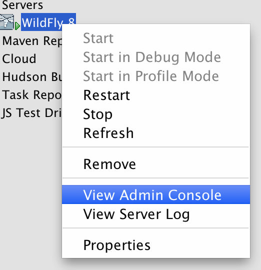Figure 52. View WildFly server log in NetBeansIn addition, the web-based administration console can be seen by clicking on ‘View Admin Console’.
12. Acknowledgements
The following Java EE community members graciously reviewed and contributed to this hands-on lab:
-
Antonio Goncalves (@agoncal)
-
Markus Eisele (@myfear)
-
Craig Sharpe (@dapugs)
-
Marcus Vinicius Margarites (@mvfm)
-
David Delabasse (@delabasse)
-
John Clingan (@jclingan)
-
Reza Rahman (@reza_rahman)
-
Marian Muller (@mullermarian)
-
Jason Porter (@lightguardjp)
-
Dan Allen (@mojavelinux)
-
Andrey Cheptsov (@andrey_cheptsov)
Thank you very much for providing the valuable feedback!
13. Completed Solutions
The completed solution can be downloaded from javaee7-hol.
14. TODO
-
Add the following use cases:
-
Concurrency Utilities for Java EE
-
WebSocket Java Client
-
-
Disable errors in persistence.xml
-
Add icons for Fix Imports, Format, Fix namespaces, Run the Project.
-
Change logging to use java.util.Logging.
15. Revision History
-
Added IntelliJ IDEA specific instructions. (Jan 22, 2014)
-
Added macros to generate WildFly and GlassFish-server specific instructions. Also enabled IntelliJ and Eclipse specific macros. (Jan 10, 2014)
-
Moving the source document from Pages to AsciiDoc (Dec 3, 2013)
16. Appendix A: Appendix
16.1. Configure WildFly 8 in NetBeans
16.1.1. Configure Update Center
-
If you are using NetBeans development build then skip this section and go to Install WildFly plugin. Otherwise in NetBeans, click on ‘Tools’, ‘Plugins’, ‘Settings’, and click on ‘Add’.
-
Specify the name as “Dev Update Center” and the URL as “http://deadlock.netbeans.org/job/nbms-and-javadoc/lastStableBuild/artifact/nbbuild/nbms/updates.xml.gz”.
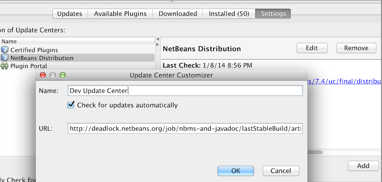Figure 53. NetBeans Update Centerand click on OK.
16.1.2. Install WildFly plugin
-
In NetBeans, click on ‘Tools’, ‘Plugins’, ‘Available Plugins’, type “wildfly” in ‘Search:’ box, and select the plugin by clicking on the checkbox in ‘Install’ column.
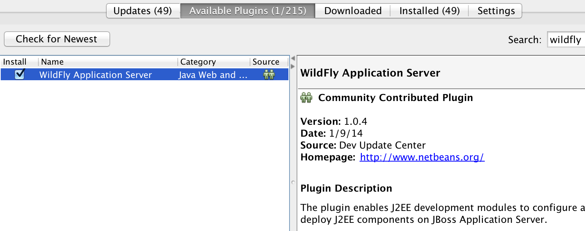Figure 54. Available Plugins in NetBeansThe exact plugin version and the date may be different.
-
Click the Install button, then Next >, accept the license agreement by clicking on the checkbox, then click the Install button to install the plugin. Click the Finish button to restart the IDE and complete installation.
16.1.3. Configure WildFly 8
-
In NetBeans, click on ‘Services’ tab.
-
Right-click on Servers, choose ‘Add Server…’ in the pop-up menu.
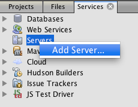Figure 55. Add Server in NetBeans -
Select ‘WildFly Application Server’ in the Add Server Instance wizard, set the name to ‘WildFly 8’ and click Next >.
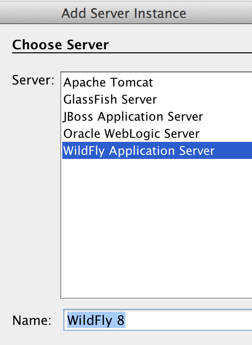Figure 56. Add WildFly instance to NetBeans -
Click on Browse… for ‘Server Location’ and select the directory that got created when WildFly archive was unzipped. Click on Browse… for ‘Server Configuration’ and select the ‘standalone/configuration/standalone-full.xml’ file in the unzipped WildFly archive.
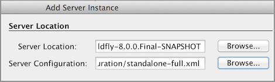Figure 57. Configure WildFly full instance in NetBeansClick on Next and then Finish. The ‘Services’ should show the WildFly instance.
 Figure 58. WildFly instance in NetBeans Services tab
Figure 58. WildFly instance in NetBeans Services tab
16.2. Prepare IntelliJ IDEA for working with WildFly 8
To be able to perform the exercises discussed in this tutorial, you need the Ultimate Edition of IntelliJ IDEA. Keep that in mind when downloading IntelliJ IDEA from http://www.jetbrains.com/idea/download/.
When the appropriate edition of IntelliJ IDEA is installed, you can start preparing the IDE for the exercises:
16.2.1. Specify the JDK
First of all, you should specify the JDK that you are going to use. In IntelliJ IDEA, this is done in the Project Structure dialog:
-
Start IntelliJ IDEA. If, as a result, a project opens, close the project ().
-
On the Welcome screen, under Quick Start, click Configure.
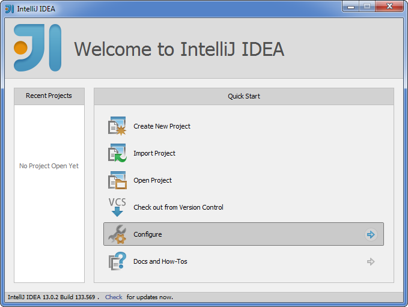Figure 59. Welcome to IntelliJ IDEA -
Under Configure, click Project Defaults, and then, under Project Defaults, click Project Structure.
-
In the left-hand pane of the Project Structure dialog, under Platform Settings, select SDKs. Click and select JDK.
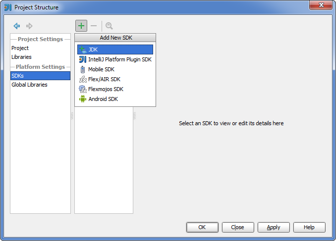Figure 60. Add JDK in IntelliJ IDEA -
In the Select Home Directory for JDK dialog, select the folder in which the JDK that you are going to use is installed, and click OK.
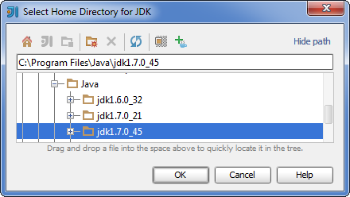Figure 61. JDK home in IntelliJ IDEA -
In the Project Structure dialog, click Apply.
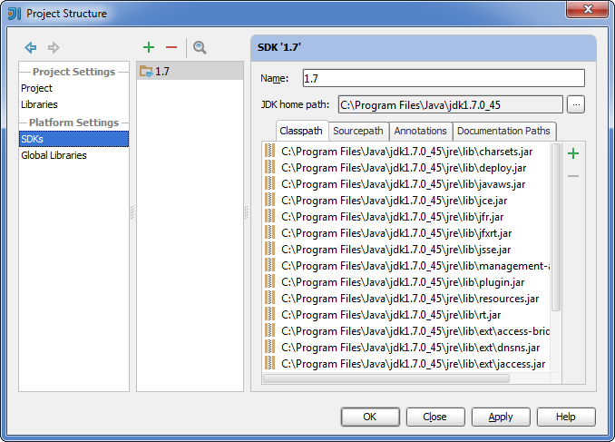Figure 62. JDK defined in IntelliJ IDEANow, let’s make the JDK that we have specified the default SDK.
-
In the left-hand pane, under Project Settings, select Project. In the right-hand part of the dialog, under Project SDK, select the JDK from the list.
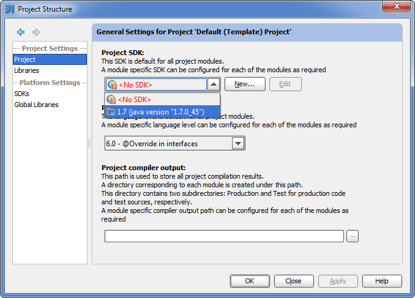Figure 63. Project SDK in IntelliJ IDEA -
Click OK.
16.2.2. Define WildFly
Defining an application server in IntelliJ IDEA, normally, is just telling the IDE where the server is installed. The servers are defined in the Settings dialog. (On OSX, this dialog is called Preferences.)
-
On the Welcome screen, to the left of Project Defaults, click Back .
-
Under Configure, click Settings.
-
In the left-hand pane of the Settings (Preferences) dialog, under IDE Settings, select Application Servers. On the Application Servers page, click and select JBoss Server. (WildFly is a server from the "JBoss family".)
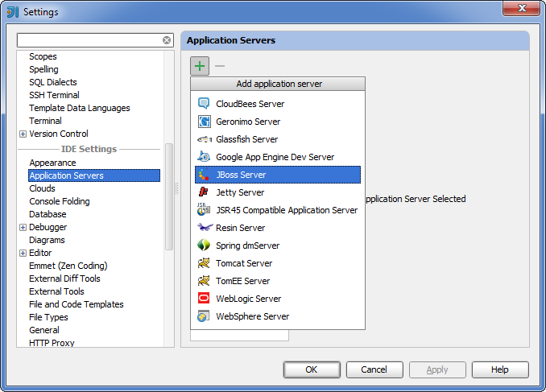Figure 64. Add WildFly in IntelliJ IDEA -
In the JBoss Server dialog, click to the right of the JBoss Home field.
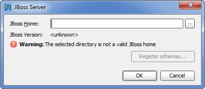Figure 65. WildFly server dialog in IntelliJ IDEA -
In the JBoss Home Directory dialog, select the folder in which you have the WildFly server installed, and click OK.
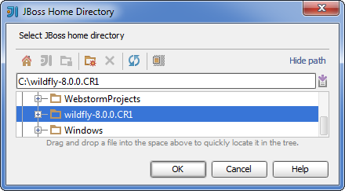Figure 66. WildFly home in IntelliJ IDEA -
Click OK in the JBoss Server dialog.
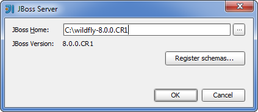Figure 67. WildFly final dialog in IntelliJ IDEA -
In the Settings (Preferences) dialog, click OK.
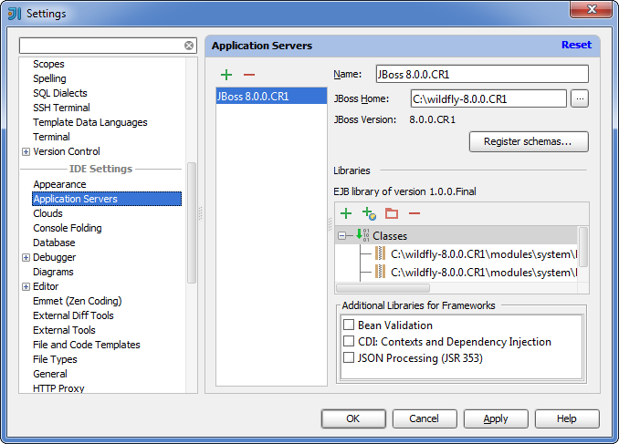Figure 68. WildFly defined in IntelliJ IDEA
16.2.3. Create a project
The sample application is supplied as a Maven project with an associated pom.xml file that contains all the necessary project definitions. The corresponding IntelliJ IDEA project in such a case can be created by simply "opening" the pom.xml file. (Obviously, this isn’t the only way to create projects in IDEA. You can create projects for existing collections of source files, import Eclipse and Flash Builder projects, and Gradle build scripts. Finally, you can create projects from scratch.)
-
On the Welcome screen, to the left of Configure, click Back .
-
Under Quick Start, click Open Project.
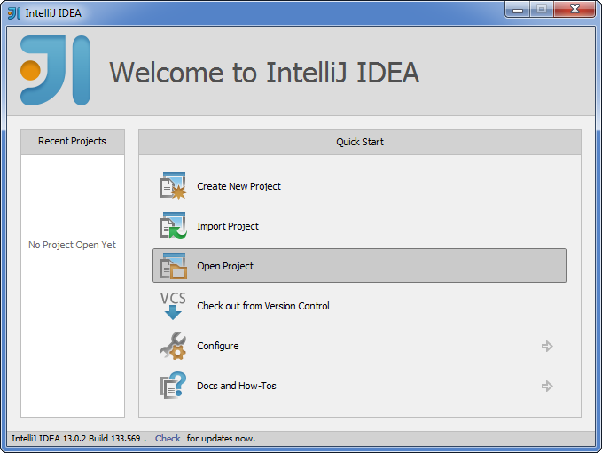Figure 69. Open project in IntelliJ IDEA -
In the Open Project dialog, select the
pom.xmlfile associated with the sample application, and click OK.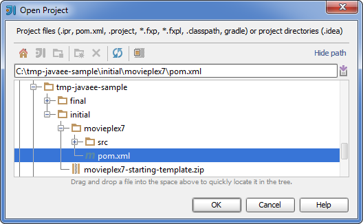Figure 70. Select pom in IntelliJ IDEAWait while IntelliJ IDEA is processing
pom.xmland creating the project. When this process is complete, the following message is shown: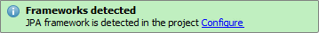Figure 71. Configure JPA in IntelliJ IDEA -
Click Configure in the message box. (If by now the message has disappeared, click on the Status bar.
 Figure 72. JPA detected in status bar in IntelliJ IDEA
Figure 72. JPA detected in status bar in IntelliJ IDEAThe Event Log tool window will open. Click Configure in this window.)
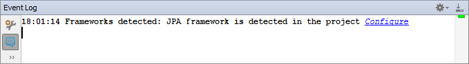Figure 73. JPA detected event log in IntelliJ IDEA -
In the Setup Frameworks dialog, just click OK. (By doing so you confirm that the file
persistence.xmlfound in the project belongs to the JPA framework.)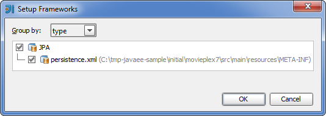Figure 74. Setup frameworks in IntelliJ IDEANow, as an intermediate check, make sure that the project structure looks something similar to this:
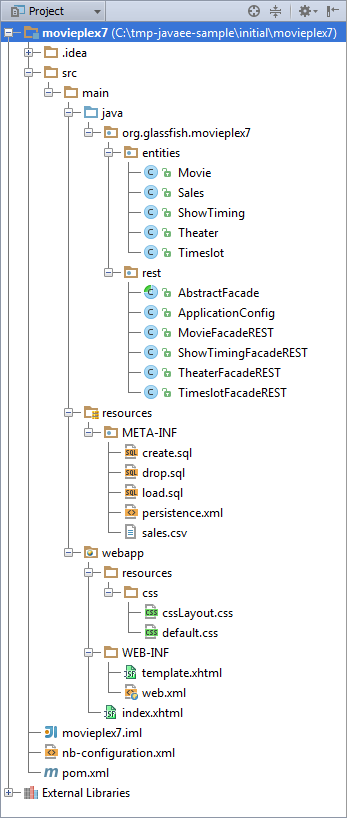Figure 75. Project structure in IntelliJ IDEA
16.2.4. Create a run/debug configuration
Applications in IntelliJ IDEA are run and debugged according to what is called run/debug configurations. Now we are going to create the configuration for running and debugging the sample application in the context of WildFly.
-
In the main menu, select .
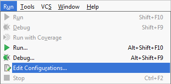Figure 76. Edit configurations in IntelliJ IDEA -
In the Run/Debug Configurations dialog, click , select JBoss Server, and then select Local.
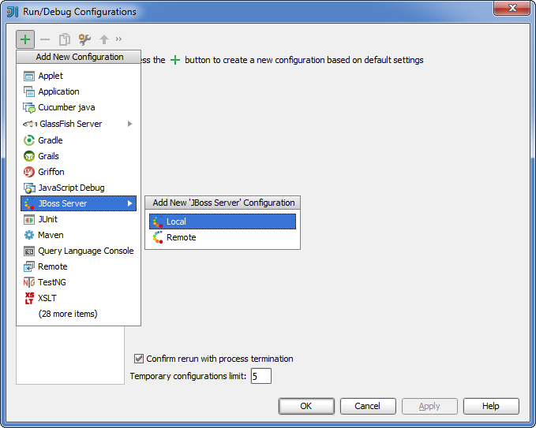Figure 77. WildFly configuration in IntelliJ IDEAAs a result, the run/debug configuration for the WildFly server is created and its settings are shown in the right-hand part of the dialog.
-
Change the name of the run/debug configuration to
WildFly8(optional). -
In the lower part of the dialog, within the line Warning: No artifacts marked for deployment, click Fix and select movieplex7:war exploded. (Artifacts in IntelliJ IDEA are deployment-ready project outputs and also the configurations according to which such outputs are produced. In our case, there are two configurations for the sample application (movieplex7:war and movieplex7:war exploded). Both configurations represent a format suitable for deployment onto a Java EE 7-enabled application server. movieplex7:war corresponds to a Web archive (WAR). movieplex7:war exploded corresponds to the sample application directory structure (a decompressed archive). The second of the formats is more suitable at the development stage because manipulations with it are faster.)
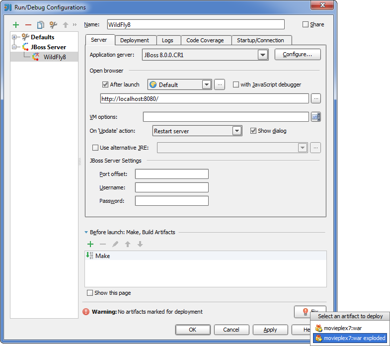Figure 78. Fixing deployment warning in IntelliJ IDEA -
Within the line Error: Artifact 'movieplex7: exploded' has invalid extension, click Fix.
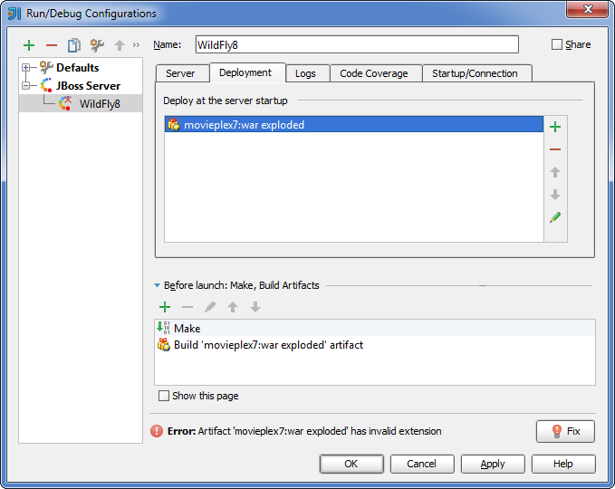Figure 79. Invalid extension error message in IntelliJ IDEA -
In the Project Structure dialog, add
.warat the end of the output directory path, and click OK. (For the servers of the JBoss family, the application root directory has to have.warat the end.)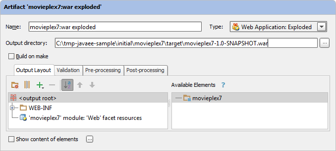Figure 80. Extension error fix in IntelliJ IDEA -
In the Run/Debug Configurations dialog, switch to the Server tab. In the field for the application starting page URL, replace
http://localhost:8080/movieplex7-1/withhttp://localhost:8080/movieplex7-1.0-SNAPSHOT/and click OK.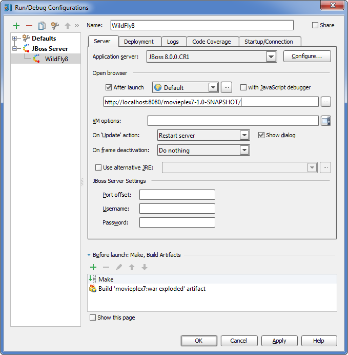Figure 81. Fixing application URL in IntelliJ IDEA
The Application Servers tool window opens in the lower part of the workspace. Shown in this window are the server run/debug configuration and the associated deployment artifact. Now you are ready to run the application.
16.2.5. Run the application
In the Application Servers tool window, select the server run/debug configuration (WildFly8 [local]) and click Run .
IntelliJ IDEA compiles the code, builds the artifact, starts WildFly and deploys the artifact to the server. You can monitor this process in the Run tool window that opens in the lower part of the workspace.
Finally, your default Web browser opens and the starting page of the application is shown.
At this step IntelliJ IDEA is fully prepared for your development work, and you can continue with your exercises.